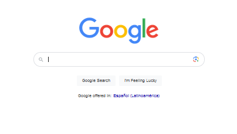

¿Cuáles son los buscadores de Internet más utilizados?
Hay ciertas cualidades que presentan los buscadores para afianzarse como alternativa al
gigante de Internet: Google. Presentan una forma de uso similar, aunque no existen dos
motores de búsqueda que indexen la web exactamente de la misma manera. Os
presentamos la lista de los buscadores de Internet más utilizados:
Google
Google es el buscador web más importante del mundo y el más utilizado. Es capaz de
proporcionar 22 características más allá de la palabra original. También recoge
previsiones tecnológicas, zonas horarias, mapas, carteleras de cine, resultados deportivos,
cotizaciones en bolsa…
Este motor de búsqueda ofrece la mejor experiencia de usuario a través de la búsqueda
rápida, avanzada y de imágenes.
Para hacernos una idea de su amplitud, se calcula que en todo el mundo hay 228 millones
de búsquedas por hora, 5.5 millones al día y 2 billones al año.

Bing
Ante el aparente monopolio de Google, la apuesta de Microsoft es Bing. Este buscador
alternativo a Google presenta un diseño atractivo, con una imagen de fondo que va
variando. Incluye información sobre esa imagen y acontecimientos ocurridos en esa fecha.
Es una alternativa en la que se pueden llevar a cabo búsquedas de imágenes, noticias o
mapas. Además, presenta widgets con resultados deportivos y ofrece un traductor de
páginas
Se puede desarrollar una división de los resultados y acoplarlos a la sección que está
separada para el papel tapiz. También para el lado de los widgets como los de mapa o
clima. Las búsquedas se pueden ubicar en cualquier lugar de la pantalla. Así se
pueden organizar los resultados.
Presenta un amplio panel de navegación que cuenta con multitud de herramientas, por lo
que las búsquedas pueden organizarse en base a la relación que tengan con búsquedas
anteriores o distintas páginas